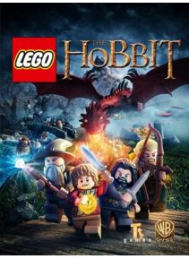

Lego Hobbit este un joc de aventură legat de aventurile Lego dezvoltat de Traveler's Tales . Jocul a fost lansat de Warner Bros. Interactive Entertainment pe 8 aprilie 2014 în America de Nord şi 11 aprilie în Europa. Jocul este o continuare a lui Lego, Stapânul Inelelor, bazat pe primele doua filme Hobbit , O calatorie neaşteptată şi Dezolarea lui Smaug.Jocul prezintă mai multe caracteristici din jocurile anterioare, incluzând o caracteristică în care utilizatorul ar trebui să gasească materiale specifice pentru a construi un obiect mare Lego. Când utilizatorul selecteaza şi introduce materialele corecte, este afişat un ecran în care este construită maşina Lego şi playerul trebuie sa selecteze piesele corecte în schimbul ştifturilor.
Preţ : 11,99 €